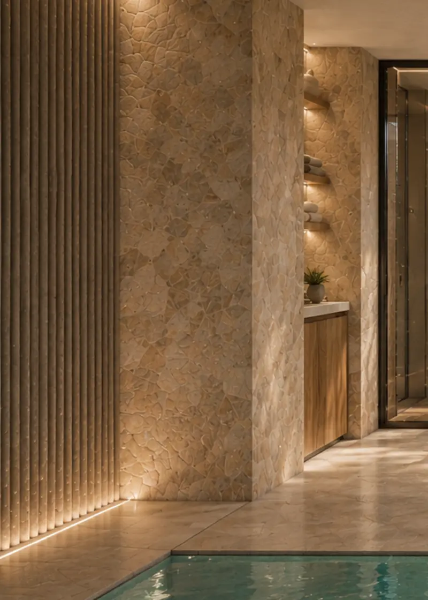
- Travertin
- Vegg og gulv ved bassenget.
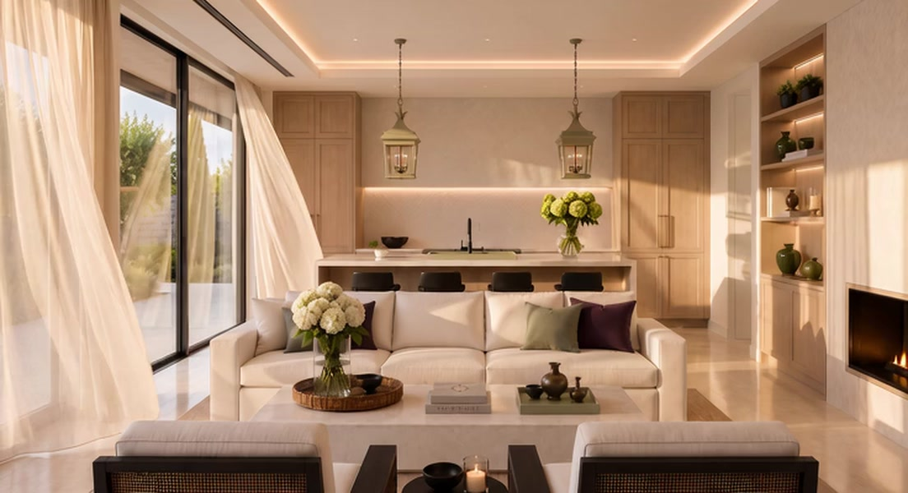
Golden Mile, Marbella
Et stille hus mellom stein, lys og hage.
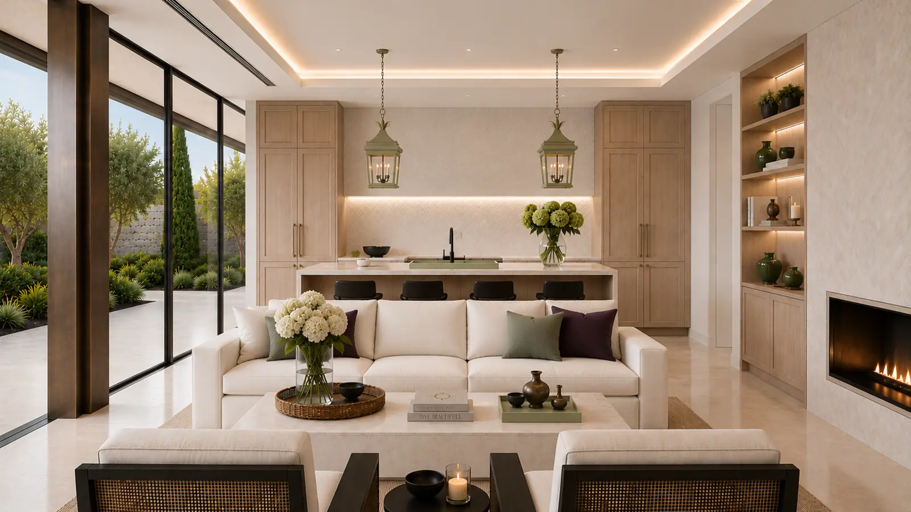
Huset åpner seg her.
Kjøkkenøya, stuen og hagen i én flukt.
Rommet dagen samles i.
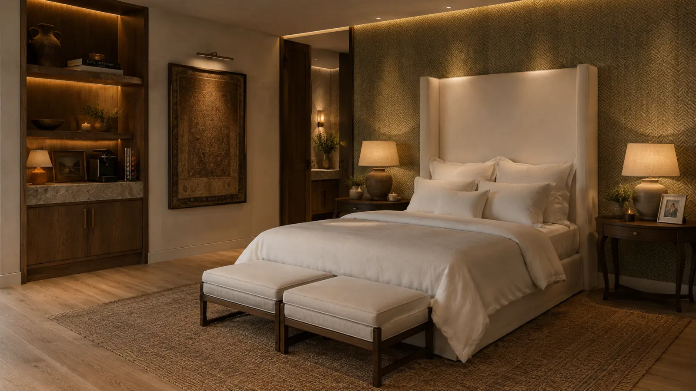
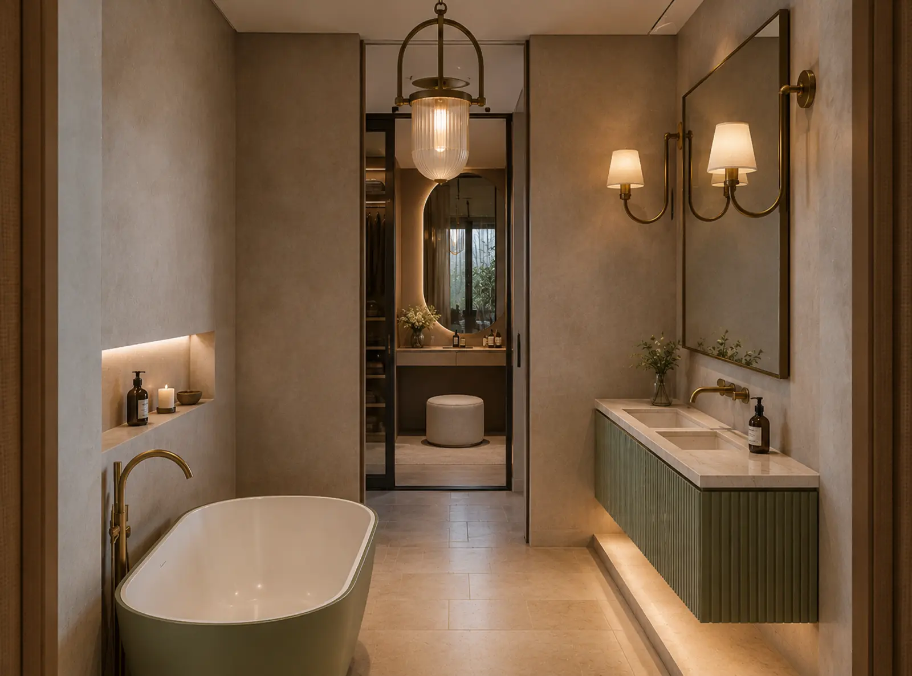
Hovedsoverommet ligger i den stille enden av huset. Lag på lag med tekstiler, dempede lamper, og et bad der badekaret står fritt i rommet. Ingenting her har hast.
Salvie, messing og kalkpuss. Samme materialer i hele huset.
Få og gode. Valgt for å eldes.

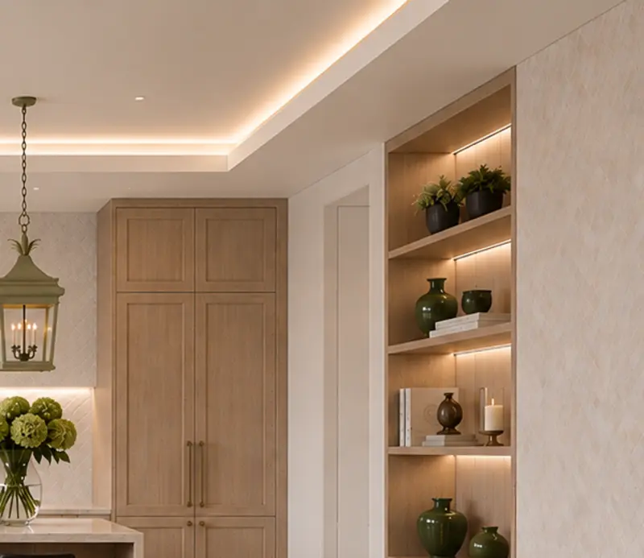
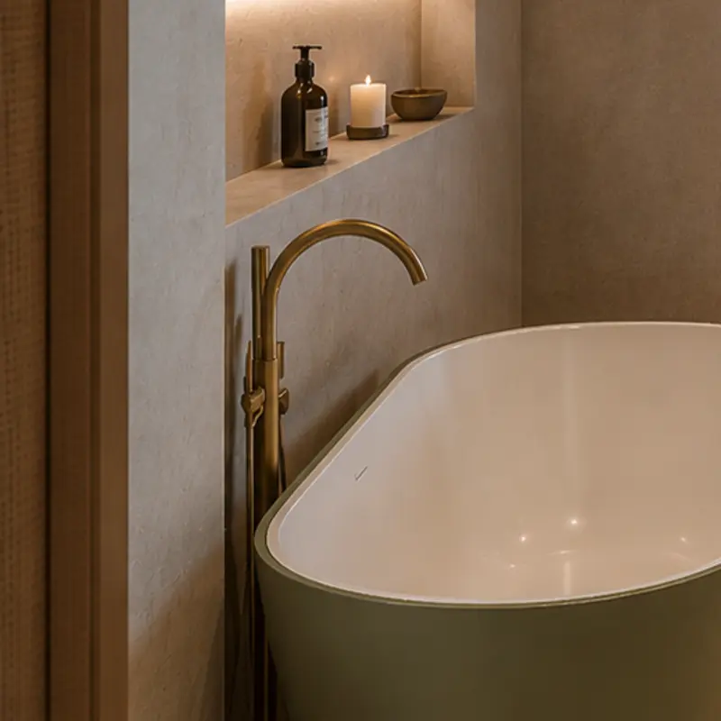
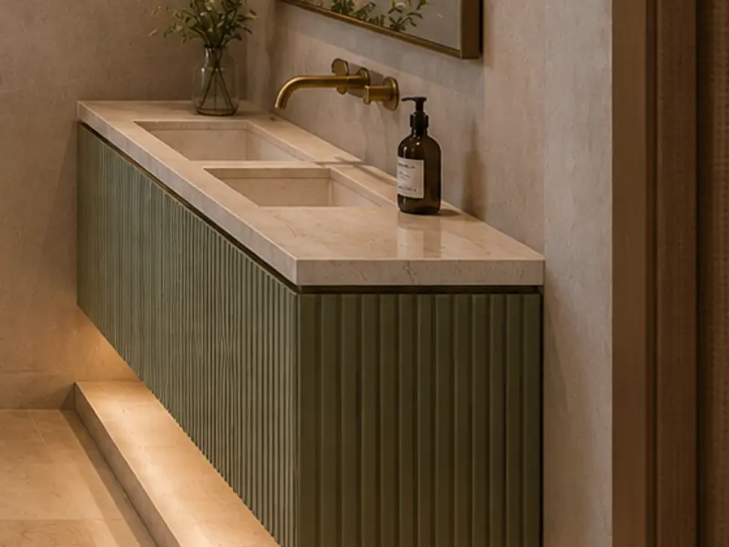
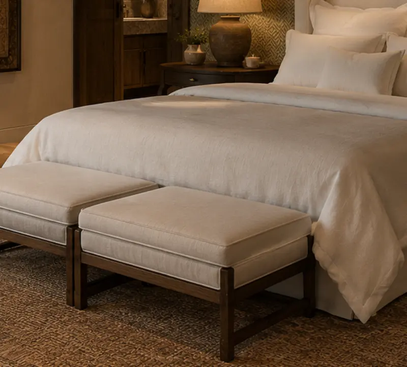
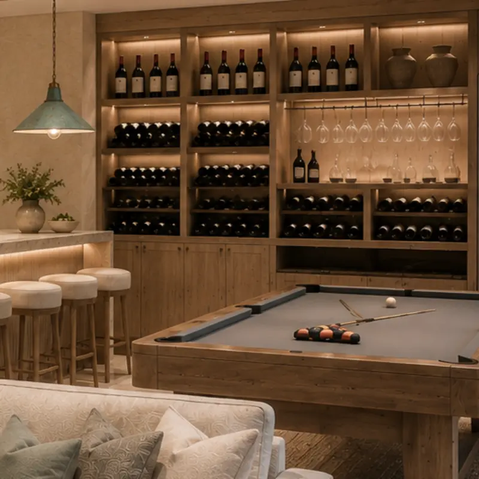
Fullstendig spesifikasjon deles ved privat visning.
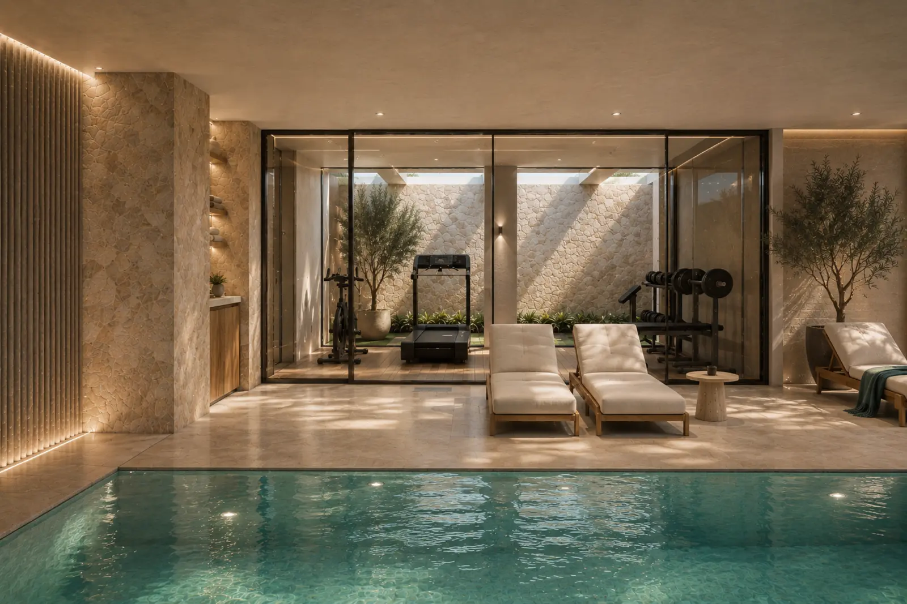
Basseng, treningsrom og spa bak glass på nedre plan. Vann, lys og restitusjon, uten å forlate huset.
Så går solen ned.
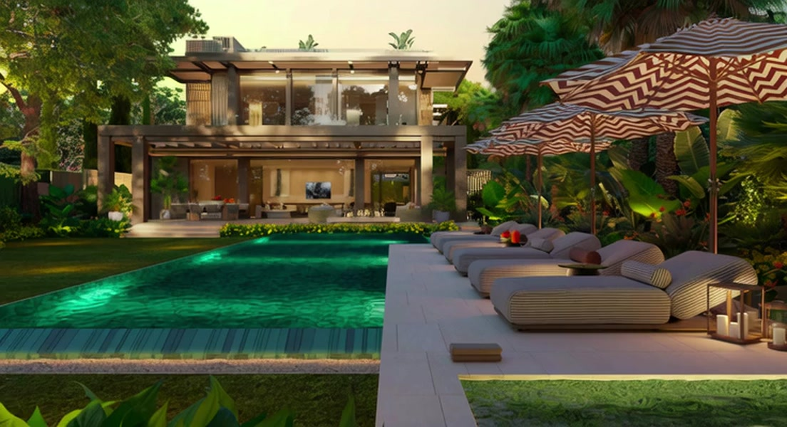
Bassenget lyser turkis, terrassen fylles, og huset står tent bak glasset.
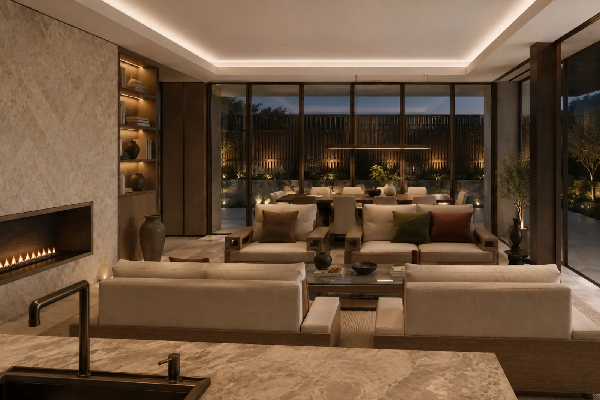